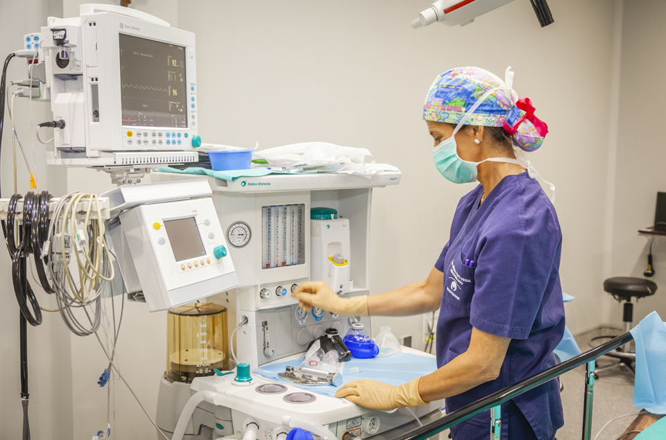

Mi nombre es Josué Andrade, soy un enfermero con 2 años de experiencia en el cuidado de pacientes, así
como
otras areas de la salud.
Soy un licenciado enfermería egresado de la Universidad Veracruzada Campus Xalapa, cuento con experiencia en el
cuidado de pacientes hospitalizados así también como pacientes en casa, ademas de tener conocimientos en el área
de hemodialisis ya que estuve trabajando un tiempo en una clínica particular. Actualmente me encuentro laborando
en el Centro Estatal de Cancerolgía, Dr Miguel Dorantes (CECAN).

De igual manera, me dedico a dar cuidado a pacientes de manera particular, ya sea hospitalizados o en casa, tales como:
Cuidados generales de enfermería
Aplicación de soluciones parenterales
Aplicación de medicamentos IV
Dialisis peritoneal
Pruebas rápidas para COVID
Curación de heridas
Vendajes
Guardias nocturnas
Oxigenoteriapia
Insumos
Etc, pregunta por algun servicio si es que no está aquí.